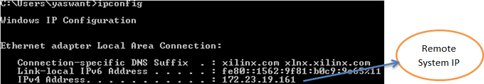
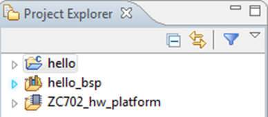
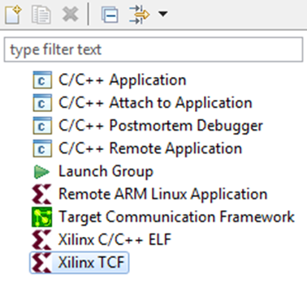
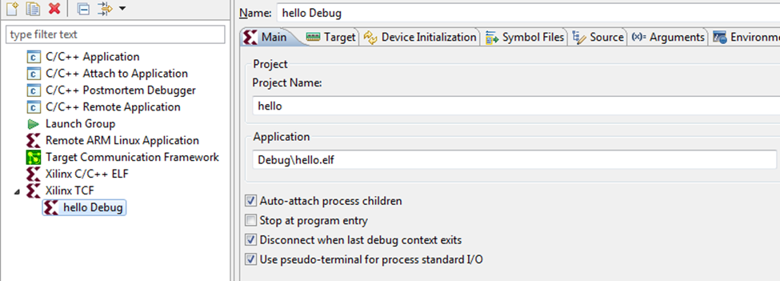
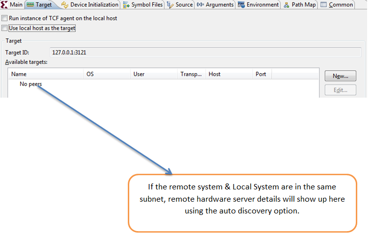
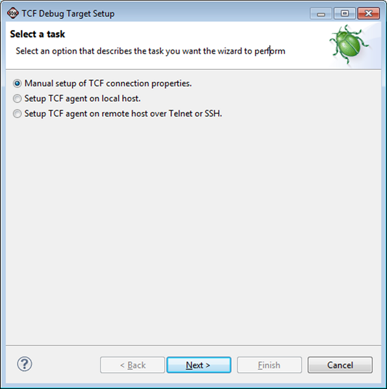
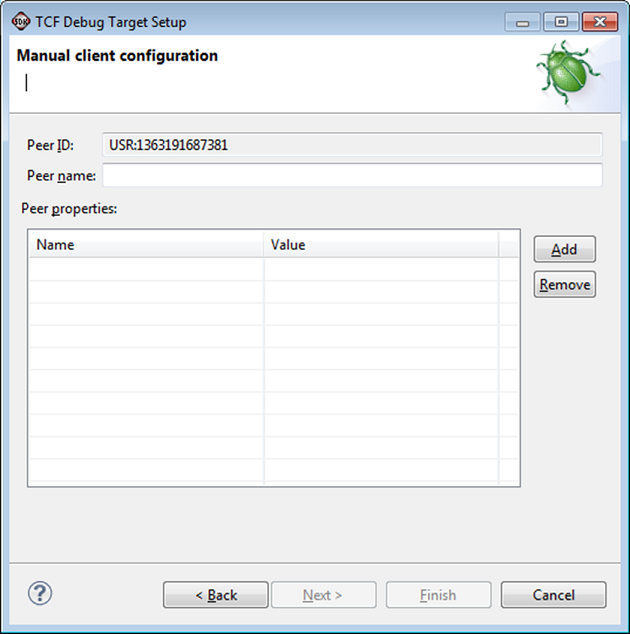
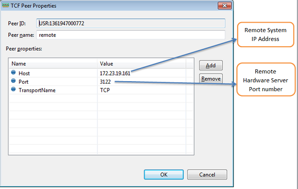
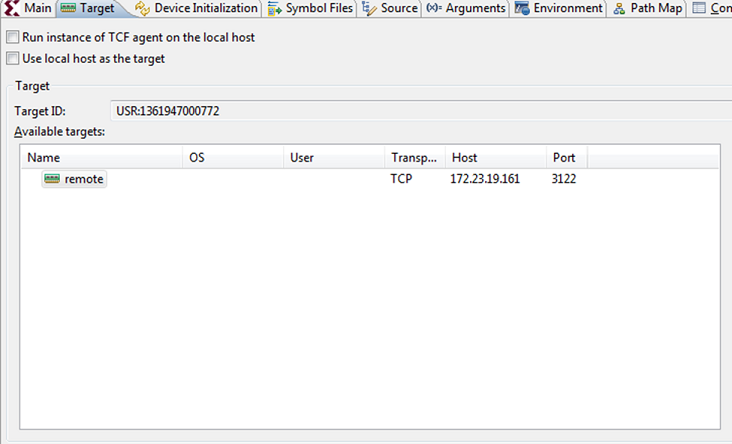
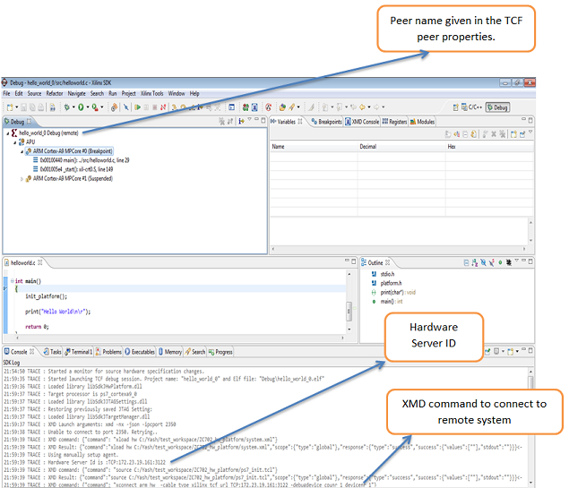

Remote Debug with TCF Debugger
Setting Up the Remote System Environment
It is possible to debug the Linux Kernel using the Xilinx TCF debugger. Use the following steps to attach to the Linux Kernel running on target and debug the source code.
- Running hw_server with non-default port (for example: 3122) enables remote connections. Use the following command to launch hw_server on port 3122:
hw_server -s “TCP::3122;Name=Project hello_world Hardware Server”
- Make sure your board is correctly connected.
- In a
cmd window, check the IP Address:

Setting Up the Local System for Remote Debug
- Launch SDK.
- Create an application.
- Select the application to remotely debug.

- Click Run > Debug Configurations.
- Create a new TCF Configuration by double-clickig Xilinx TCF.


- Go to the Targets tab and unselect Use Localhost as the target.

- Click the New button to display the TCF Debug Target Setup dialog box.

- Click the Next button to display the next screen in the TCF Debug Target Setup dialog box.

- Click the buttonm, and enter the following:

- Click OK. The Target tab opens with the remote target displayed.

- Click the Debug button.


SDK TCF Debugger
Copyright 1995-2013 Xilinx, Inc. All rights reserved.